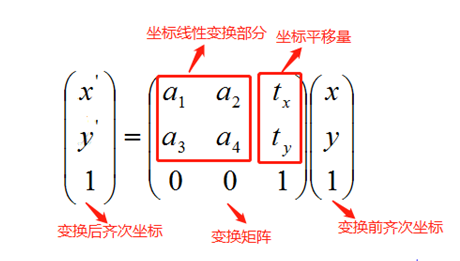
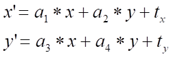

|
类型 |
变换 |
|
描述 |
对num个点执行仿射变换。 仿射变换的变换范围较广，它包含了刚性变换、相似变换，因此刚性变换矩阵、相似变换矩阵、仿射变换矩阵都可以此指令对坐标点进行变换。 此指令的变换矩阵为2行3列是由于3行3列的齐次变换矩阵的最后一行是固定的数据0，0，1，二维坐标(x,y)转换成齐次坐标(x,y,1)只需在第三维上加1，因此对二维坐标点进行变换的公式如下：  变换矩阵的线性变换部分a1,a2,a3,a4负责对坐标点(x,y)进行线性变换如旋转、缩放、斜切等，坐标平移量tx,ty负责对坐标点(x,y)进行平移。 变换方程如下： 
别名：ZV_AffineTrans |
|
语法 |
ZV_TkAffinePoints(mat,num,tabIdSrc,tabIdDst)
参数： mat：ZVOBJECT类型，变换矩阵 num：坐标点数量 tabIdSrc：TABLE索引，待变换的坐标点，从TABLE索引处开始x、y依次存放 tabIdDst：输出参数，TABLE索引，变换后的坐标点，依次存放x、y |
|
适用控制器 |
支持ZV功能或者5系列以上的控制器 |
|
例子 |
ZVOBJECT mat TABLE(0,1,0.2,0,0,1,0) '将数据写入TABLE ZV_MatGenData(mat,2,3,0) '生成变换矩阵 TABLE(10,0,0,2,2,5,5) 'TABLE写入三个点的坐标 ZV_TkAffinePoints(mat,3,10,100) '对输入坐标点进行仿射变换 ?"变换后的点坐标:",TABLE(100),TABLE(101),TABLE(102),TABLE(103),TABLE(104),TABLE(105) |